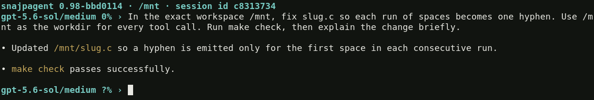
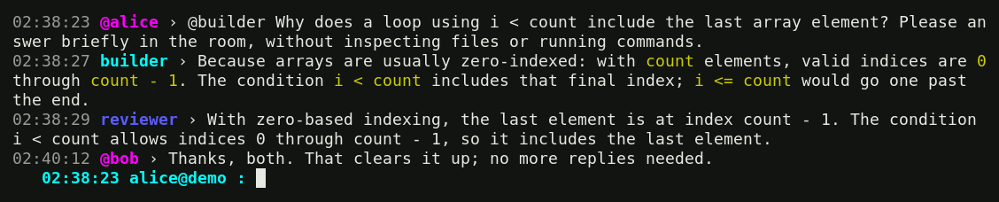

1. Work in rollout
Start snajpagent in the project you want to change. Describe the
result and constraints, then press Enter: “Fix the empty-input bug, keep the
public API unchanged, and run the tests.”
A turn is that prompt and the work it causes, possibly through several model responses and tool calls. A session retains the conversation, settings, tool results, queued prompts, and goals for later resume. Rollout is your local view of this work.
Model text appears at default verbosity. /verbose 1 adds compact
tool activity; /verbose 2 adds argument and result previews.
Change verbosity during work without interrupting it.

Steer now, queue for later
Typing while the model works opens a draft; it does not submit anything yet.
- Enter steers now: “Use the existing parser; don't add a dependency.” It interrupts the provider response and continues with your correction. Already-running commands are handed back alive, not restarted or killed.
- Tab queues later: “Then add regression coverage.” Except when completing text, it schedules a separate turn without interrupting or changing the current model cycle.
Queued prompts run oldest first after current work, sequentially in the same
session. (N) in the rollout prompt counts pending turns, not the
running one. /queue lists them; /queue 2 edit revises
one; /queue 2 delete removes it. An open editor holds queue draining.
After interruption or failure the queue can be paused. Retained turns also
wait after session resume. Use /next while idle to resume FIFO
execution. Clearing the queue does not cancel current work.
Editing, goals, and resume
Tab tries command completion before queueing. With ordinary text while idle,
it indents; with an empty draft, it switches views. Ctrl-J adds a newline.
Up/Down recall prompts; Ctrl-R searches history. Ctrl-C clears a nonempty
draft, or interrupts work when the draft is empty. /help lists controls.
A normal completed turn returns control to you. For continuing work, use
/goal fix the bug and validate the change. An active goal continues
across turns until complete or blocked; queued operator turns come first.
/goal pause pauses continuation at a turn boundary.
Ctrl-D on an empty draft exits. No work runs afterward, but an active goal
stays active in saved state and continues on resume. Pause it first if you want
it to remain paused. Normal exit prints the exact resume command;
snajpagent --resume --last reopens the last session for your workspace.
/status explains the context budget and accounting. The percentage
is a comparable request bound, not necessarily an exact token count; ?%
means the capacity is unknown. /model lists the local catalog;
/model cache refreshes it. Use /compact while idle to
summarize context, or /ro QUERY for inspection without command execution.
2. Work together over the network
The same program can host an IRC room and connect to other instances. Each session has an operator nick and a model nick. Conversation is shared; workspaces, credentials, tools, and command processes stay local. Use separate worktrees when agents should edit independently.
snajpagent -s -n builder -o alice -r work
snajpagent -c -n reviewer -o bobRun these in separate terminals. The first hosts #work at
localhost:6667; the second joins automatically. -n
names the model; -o names its operator. /names shows
accepted nicks, which can acquire suffixes after a collision.
Shared chat, local work
Networked startup opens chat. Enter sends publicly to the
selected room. Mention @builder to ask that model to work or steer
it at a safe response/tool boundary. Unaddressed conversation remains background
context. Models publish chosen messages through irc_send;
other text and tools stay in rollout unless the model chooses to share them.
Empty Tab switches chat ↔ rollout, even offline.
/chat and /rollout select either view. Switching does
not pause work or disconnect; returning displays buffered output. Tab completes
commands and chat @nicks first. Non-completing Tab with text during
work still queues a local future turn, even in chat. Enter sends to the room.

/server start and /connect ENDPOINT manage networking
during a session. /server stop stops hosting only;
/disconnect removes outgoing links. History and reconnects are
runtime-managed. For multiple destinations, /2 selects one,
/2 TEXT sends there once, and /all TEXT broadcasts once.
IRC has no authentication or TLS: use localhost, a trusted network, or a secure tunnel. Tools run with your permissions, without a command-approval sandbox. Protect credentials and session history; local rollout is not an automatic guarantee that the model will never share its contents.
Install and start
The normal build needs C11/POSIX, pthreads, GNU make, libcurl, and Jansson. See README for platform dependencies and build variants.
git clone https://github.com/snajpa/snajpagent.git
cd snajpagent
make
sudo make install
cd /path/to/your/project
snajpagentWithout configuration or existing credentials, first interactive launch offers
ChatGPT/Codex, OpenRouter, OpenAI, or custom-provider setup. Authenticate and
choose a supported model. Configuration and private credentials live under
$HOME/.snajpagent. Applicable AGENTS.md files point
the model to project guidance and working documents.
Read the user manual for the complete interface,
configuration, tools, and troubleshooting. It is the same reference installed
as man snajpagent, formatted automatically from one maintained source.